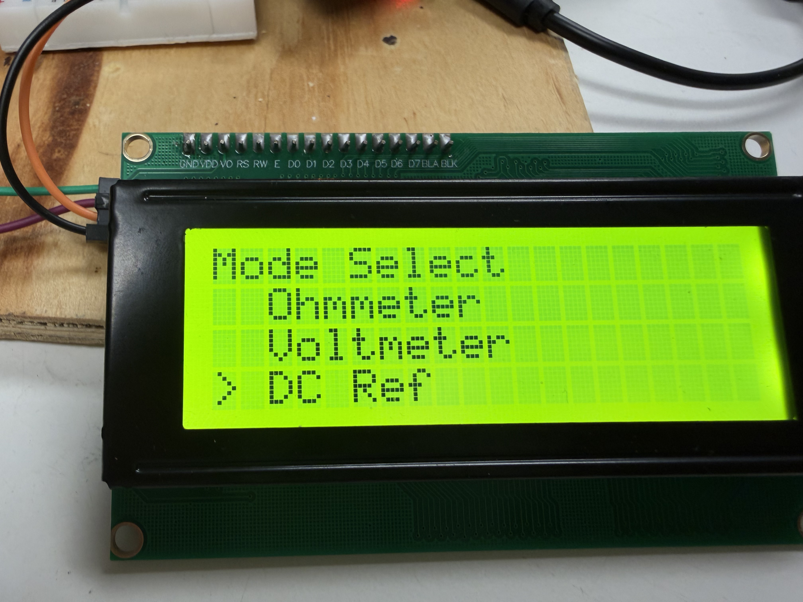
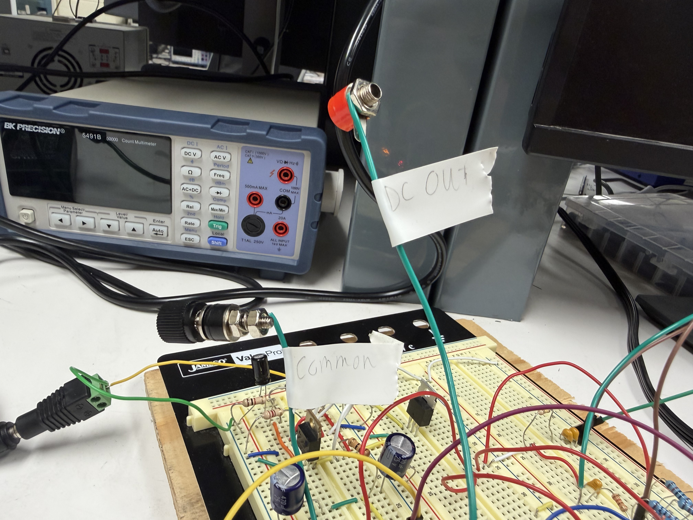
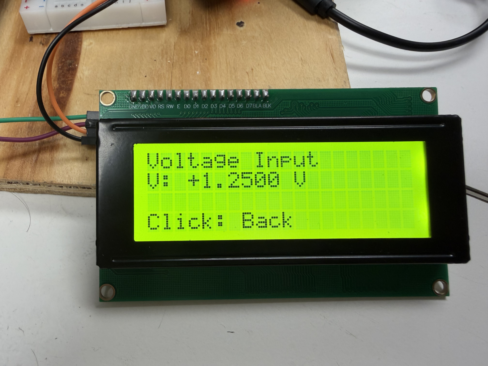
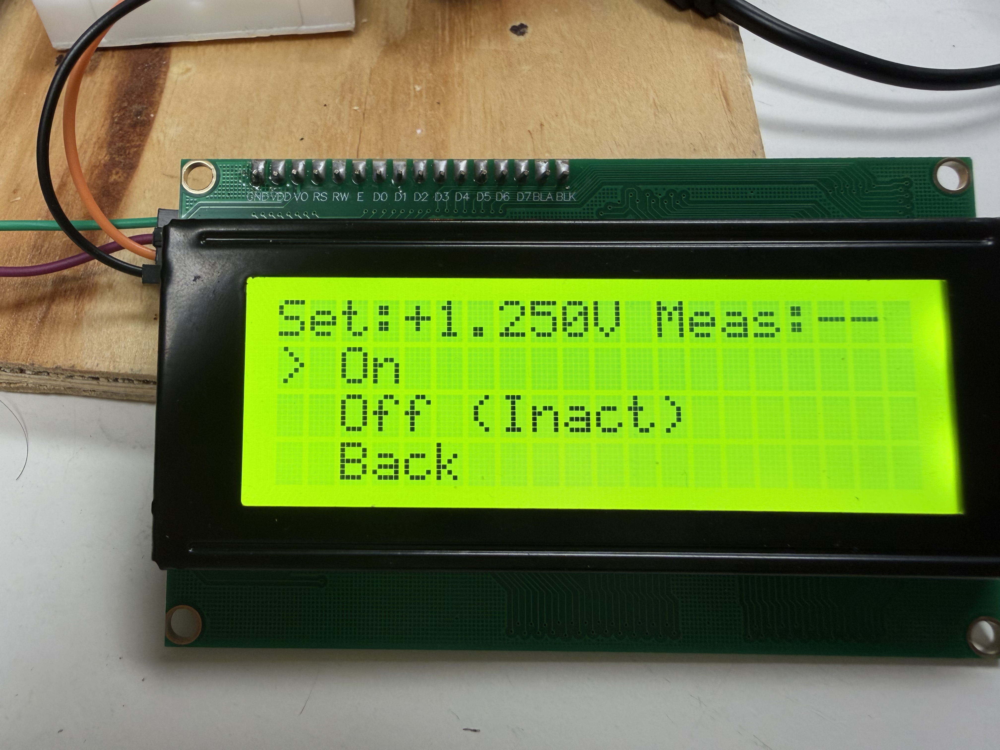
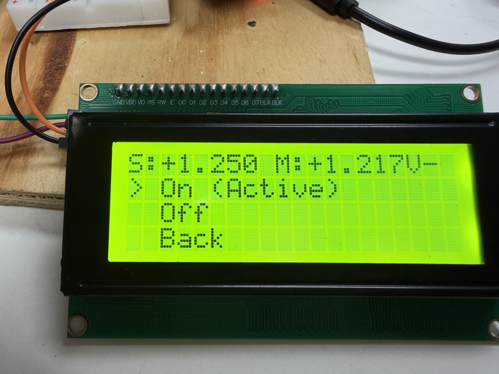
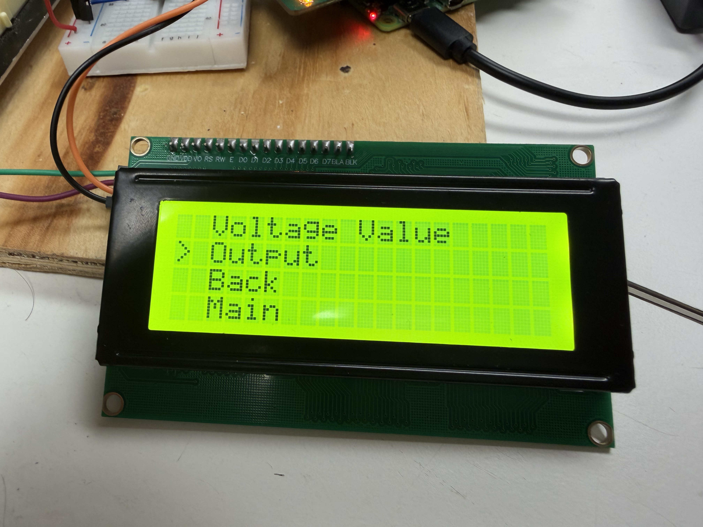

DC Voltage Reference
Welcome to the DC Reference manual. This tool lets you generate a precise, stable DC voltage from within the Tool Bench system itself — no external power supply needed. You set the voltage you want, turn the output on, and the system produces it on the output terminals while simultaneously measuring it through the built-in Voltmeter so you can verify what’s actually coming out.
Output range: ±5V DC in steps of 0.625V • 16 discrete voltage levels • Live measurement via Voltmeter • Output turns off automatically when you navigate away
Before You Start
The DC Reference works in three stages:
- Set a voltage — Use the encoder to dial in the value you want to output, from −5V to +5V in 0.625V steps.
- Turn the output on — The system will send that voltage to the output terminals and begin measuring it live.
- Turn off or navigate away — The output is always switched off automatically when you leave the output screen, whether you press Back or go to Main. You never have to worry about leaving a voltage active by accident.
Access the DC Reference Menu
From the main system menu, turn the rotary encoder to scroll to DC Reference and press to select it. The DC Reference menu will appear with four options: Voltage Value, Output, Back, and Main.
If you arrived here automatically from the Voltmeter’s Internal Ref option, you will land directly on this menu — you can skip straight to Step 2.

Connect Your External Device
If you want to feed the DC Reference output into an external device — such as a multimeter, oscilloscope, or circuit under test — connect it to the Tool Bench terminals before turning the output on.
There are two connections to make:
- Connect your device’s positive or signal input to the terminal labelled DC Out.
- Connect your device’s ground to the terminal labelled Ground.
Refer to the image below to identify the correct terminals on the Tool Bench.

Set Your Desired Voltage
Select Voltage Value from the menu and press the encoder. This takes you to the voltage input screen, where you can choose the voltage you want to generate.
Turn the encoder to scroll through the available voltage levels. Each click moves the value by 0.625V, and it will wrap between −5.000V and +5.000V. The current value is shown live on the display as you scroll.
The 17 available voltage levels are:
| Voltage | Voltage | Voltage |
|---|---|---|
| +5.000 V | +1.250 V | −1.875 V |
| +4.375 V | +0.625 V | −2.500 V |
| +3.750 V | 0.000 V | −3.125 V |
| +3.125 V | −0.625 V | −3.750 V |
| +2.500 V | −1.250 V | −4.375 V |
| +1.875 V | −5.000 V |
V: +2.5000 V or V: -1.2500 V. Positive means above ground, negative means below.
Once you’re happy with the value, press the encoder to confirm and it will automaticlly return you to the DC Reference menu. Your chosen voltage is now saved and ready to be used.

Go to the Output Screen
From the DC Reference menu, scroll to Output and press the encoder to enter the output control screen.
At the top of this screen you will see a summary row showing your set voltage and the live measured voltage (which shows -- until the output is turned on). Below that are four options: On, Off, Back, and Main.

Turn the Output On
Scroll to On and press the encoder. The system will now:
- Send the target voltage to the internal digital potentiometer, which adjusts the hardware circuit to produce the correct output.
- Enable the output on the hardware pins, making the voltage appear on the output terminals.
- Begin live voltage measurements using the Voltmeter module, updating the display roughly once per second.
The top row of the screen will update to show both values side by side, for example: S:+2.500 M:+2.487V — where S is your set target and M is what the Voltmeter is actually measuring. A small difference between the two is normal.
The On option will also display On (Active) to confirm the output is live.

Turn the Output Off
When you want to stop the output, scroll to Off and press the encoder. The system will immediately:
- Disable the hardware output pins, cutting the voltage to the terminals.
- Reset the measured voltage display back to
--. - Show Off (Inact) to confirm the output is no longer active.
You can turn the output back on again by scrolling to On and pressing, without needing to re-enter your voltage value.
Exit the Output Screen
When you’re done, you have two options from the output screen:
- Back — Returns you to the DC Reference menu. The output is turned off automatically.
- Main — Returns you to the top-level main menu. The output is turned off automatically.
In both cases, the system shuts down the hardware output safely before navigating away. You do not need to manually turn the output off first — but it’s good practice to do so.

Return to the Main Menu
From the DC Reference menu (not the output screen), select Back or Main to return to the top-level system menu.

Example Demonstration
Watch the video below to see the DC Reference in action — including setting a voltage, enabling the output, and reading the live measurement from the Voltmeter.